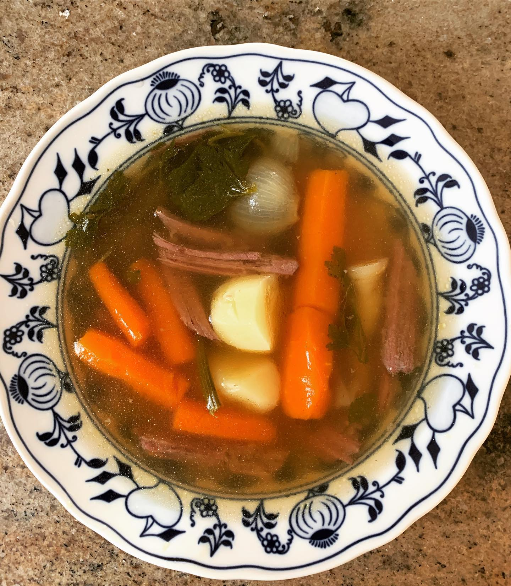

Hovädzia polievka podľa @dasaklasova — Normy Jedál
So typical, so traditional Sunday lunch in Slovakia starts with soup! This is beef broth with fresh young veggies from our garden. Do you used to eat soup also? 🍲 🥩 #soup #beefsoup #beefbroth #sunday #sundaylunch #soupsunday #fivehourscookedsoup #freerangebeef #healthyfood #healthyfoodlover #chef #cheflife🔪 #chefssunday #homemadesoup #hovadzivyvar #hovadziapolievka #zdravastrava #zdravapolievka #polievka #nedela #pathodinvarenyvyvar #daretobechef #sundayfunday